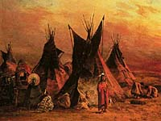
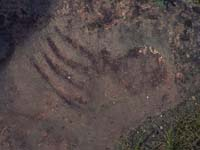

Saskatchewan is a young province whose roots go way back - the echoes of history are everywhere. The Heart of Canada's Old Northwest, tourism region 5, preserves the history of Louis Riel, Gabriel Dumont, the Northwest Rebellion and so on. The Cypress Hills house Fort Walsh and a few hours away, Scotty, the T-Rex was uncovered near Eastend. | |||
 You thought King Tut's tomb was ancient? Visit a place twice as old: Wanuskewin, a park near Saskatoon which sensitively interprets 6,000 years of Indian heritage and culture. | |||
As the birthplace of the Royal Canadian Mounted Police, the province has a strong connection with the world's most famous police force. A visit to Fort Battleford will provide you with the chance to see interpreters, in period costumes. | |||

Turn-of-the-century forts bring the early days of the Redcoat Mounties to life, as does the renowned RCMP Museum in Regina. Learn about the struggle of early settlers -- harsh conditions and poor crops; and Indians losing their way of life. | |||
With more museums per capita than anywhere else in Canada, you have plenty of chances to walk in the footsteps of history; to remember furtraders, sodbusters and railroaders. Learn about York boats and paddlewheelers used by explorers and fur traders along the North and South Saskatchewan Rivers. | |||
Dream of patriots, rebels and proud Indian chiefs. See scenes of the prairie over a century ago; recreated in magnificent murals and dioramas. | |||

Explore the badlands and forbidding caves of the Big Muddy outlaws. Go ahead, and ride the trail with other adventure seekers - recreate the spirit of the old west - Canadian style. | |||
 Memories of the past are strong and vivid in Saskatchewan. Share them with us. View Scotty, our ferocious Tyrannosaurus Rex - in roaring model form or as skeletal remains. Perhaps you may uncover a part of our past. |